전자산업기사 (2017-05-07 기출문제)
1과목: 전자회로
1. 소신호 증폭기의 설명으로 옳은 것은?
- 부하선의 작은 부분만을 사용한다.
- 항상 mV 범위의 출력신호를 갖는다.
- 각 입력 주기에 포화가 일어난다.
- 항상 공통 이미터 증폭기이다.
(정답률: 74%)

2. PCM 회로에서 빈칸 A의 회로는?
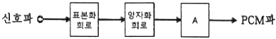
- 부호화 회로
- 비교기 회로
- 증폭 회로
- 필터 회로
(정답률: 92%)
3. 회로의 전달 특성은? (단, Q1과 Q2 트랜지스터는 스위치용이다.)
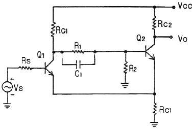
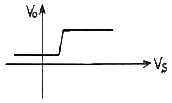
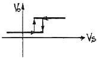
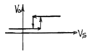
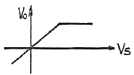
(정답률: 84%)
4. FET 증폭기의 고주파 응답을 결정하는 것은?
- 바이패스 커패시터
- 트랜지스터의 내부 커패시터
- 전압이득
- 전류이득
(정답률: 73%)
5. 교류를 직류전원으로 변환할 때 사용되지 않는 부품은?
- 변압기
- 정류다이오드
- 제너다이오드
- 트라이액
(정답률: 79%)
6. 전압 증폭도가 100인 증폭기의 전압이득은 몇 dB인가?
- 10
- 20
- 30
- 40
(정답률: 79%)
7. 증폭도 A가 매우 큰 증폭기에 귀환율 β의 부귀환을 가한 경우 전압이득은?
- Aβ
- 1/β
- 1/βA
- A/1+A
(정답률: 79%)
8. 부귀환 증폭기에서 Aβ≫1의 경우 증폭기 이득의 안정성이 향상되는 이유는?
- 증폭기 이득 A가 크기 때문이다.
- 귀환계수 β가 작기 때문이다.
- 증폭기의 부하 저항이
 만큼 감소되기 때문이다.
만큼 감소되기 때문이다. - 증폭기의 이득이 귀환회로의 β에 의해서 결정되기 때문이다.
(정답률: 72%)
9. 다이오드의 전하축적 효과가 없을 때 옳은 것은?
- 순방향 전류값이 적다.
- 순방향 전류값이 크다.
- 역방향 회복시간이 무한대이다.
- 역방향 회복시간이 “0”이다.
(정답률: 73%)
10. 그림의 입출력 특성을 가지는 회로는?
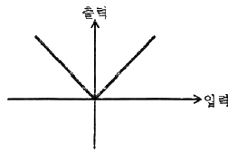
- 반파정류회로
- 전파정류회로
- 연산증폭기
- 클리핑 회로
(정답률: 74%)
11. 연산증폭기 회로에 그림 ⒜를 입력할 때 그림⒝와 같은 출력이 나타나는 현상은?
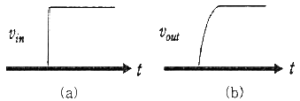
- 슬루 레이트(slew rate)
- 입력 바이어스 전류
- DC 오프세트(offset) 전압
- 유한한 전압이득
(정답률: 88%)
12. 맥동률에 관한 설명으로 올바른 것은?
- 교류를 직류로 바꾸는 과정이다.
- 맥동률(
 )은
)은  로 구할 수 있다.
로 구할 수 있다. - 정류된 직류 출력에 교류성분이 얼마나 포함되어 있는지의 정도를 나타낸다.
- 교류를 직류로 만들 때 직류가 되지 않고 남아있는 교류 성분으로 모양이 파도 모양처럼 나타난다.
(정답률: 76%)
13. 펄스부호변조(PCM)에 대한 설명 중 틀린 것은?
- 점유 주파수 대역이 넓다.
- PCM 고유의 잡음이 발생한다.
- 전송 방해가 많은 통신로에서도 전송 품질이 좋은 통신이 가능하다.
- 원신호 펄스 재생은 진폭 변동이나 파형 찌그러짐에 영향을 받는다.
(정답률: 63%)
14. 펄스 회로의 출력이 Vo=1-e-0.1t일 때 시정수 몇 초인가?
- 20초
- 10초
- 1초
- 0.1초
(정답률: 65%)
15. 회로에서 Ei=1V일 때 전류 IL은 몇 mA 인가?
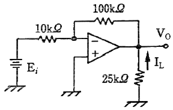
- 0.1
- 0.4
- -0.5
- -0.6
(정답률: 78%)
16. 교차 일그러짐(crossover distortion) 현상은 어느 증폭기에서 발생하는가?
- A급 증폭기
- AB급 증폭기
- B급 증폭기
- C급 증폭기
(정답률: 87%)
17. 컬렉터 접지 증폭회로에 대한 설명으로 틀린것은?
- 이미터 플로어라고도 한다.
- 전압 이득은 1보다 약간 작다.
- 입력전압과 출력전압의 위상은 역상이다.
- 입력 임피던스는 높고, 출력 임피던스는 매우 낮다.
(정답률: 61%)
18. FM신호의 검파회로에서 별도의 진폭제한회로가 필요 없는 회로는?
- 제곱 검파회로
- 복동조 주파수 변별 회로
- 포스터 실리(Forster-Seeley) 주파수 변별 회로
- 비검파기(ratio detector)
(정답률: 81%)
19. 회로에서 컬렉터 전류 IC를 구하면? (단, β=100이고, VBE=0.7V이다.)(문제 오류로 가답안 발표시 1번으로 발표되었지만 전항 정답처리되었습니다. 여기서는 1번을 누르면 정답 처리 됩니다.)
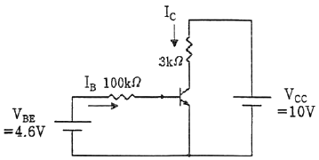
- 39 mA
- 25 mA
- 46 mA
- 32 mA
(정답률: 67%)
20. 연산증폭기의 스위칭 특성에 가장 크게 영향을 주는 것은?
- 입출력 임피던스
- 슬루 레이트
- 출력 오프셋 전압
- 동위상제거비(CMRR)
(정답률: 80%)
2과목: 전기자기학 및 회로이론
21. 점전하 +Q(C)와 무한평면도체에 대한 영상전하는?
- +Q(C)보다 대단히 크다.
- -Q(C)보다 대단히 적다.
- +Q(C)와 같다.
- -Q(C)와 같다.
(정답률: 82%)
22. 평행도선에 같은 크기의 왕복 전류가 흐를 때 두도선 사이에 작용하는 힘과 관계를 옳게 나타낸것은?
- 유전율에 비례한다.
- 투자율에 비례한다.
- 두 전류의 곱에 비례한다.
- 간격의 제곱에 반비례한다.
(정답률: 60%)
23. 원천이 없는 손실 유전체(일반 매질)에서의 맥스웰 전자 페이저 벡터 방정식 중 잘못 표현된 것은? (단, HS는 자계, ES는 전계이다.)
- ▽ × HS = (σ+jwε)ES
- ▽ · ES = 0
- ▽ · HS = 0
- ▽ × ES = jwμHS
(정답률: 57%)
24. 구(球)의 전하가 5×10-6C일 때, 구 중심에서 3m 떨어진 구 외부 한 점의 전위(V)는? (단, εs=1이다.)
- 10×103
- 15×103
- 20×103
- 25×103
(정답률: 75%)
25. 유전체내의 전속밀도를 정하는 원천은?
- 진전하만이다.
- 분극전하만이다.
- 유전체와 유전율이다.
- 진전하와 분극전하이다.
(정답률: 60%)
26. 전위 V가 x만의 함수이며, x=0에서 V=100V, Ex=100V/m일 때 전위(V)를 나타내는 식은?
- -100x + 100
- 100x + 100
- 100x - 100
- -100x - 100
(정답률: 60%)
27. 자기회로의 자기저항이 일정할 때 코일의 권수를 1/2로 줄이면 자기인덕턴스는 어떻게 되는가?
 로 줄어든다.
로 줄어든다.- 1/2로 줄어든다.
- 1/4로 줄어든다.
- 1/8로 줄어든다.
(정답률: 72%)
28. 정전용량이 C인 콘덴서에서 극판사이의 비유전율이 2인 유전체를 제거하고 공기로 채운 경우 그 때의 용량을 C0라고 하면, C와 C0의 관계는?
- C=2C0
- C=4C0
- C=C0/4
- C=C0/2
(정답률: 69%)
29. B=0.2ax-0.3ay+0.5azWb/m2인 자계 내에서 ax방향으로 106m/s인 속도로 운동하고 있는 한개의 전자가 있다. 이때 어떤 전계가 작용하면 전자에 작용하는 전체 힘이 영(zero)이 되는가?
- (5ay+3az)×105
- (3ay+5az)×105
- (5az+3az)×105
- (5ax+3az)×105
(정답률: 55%)
30. 무한장 솔레노이드에 전류가 흐를 때 발생되는 자계에 관한 설명 중 옳은 것은?
- 내부 자계의 세기는 0이다.
- 내부 자계는 평등 자장이다.
- 외부 자계는 누설자속이 있다.
- 외부와 내부 자계의 세기는 같다.
(정답률: 52%)
31. 무한히 긴 전송 회로의 반사계수는?
- 0
- 0.2
- 0.3
- 1
(정답률: 74%)
32. RLC 병렬회로에서 공진주파수
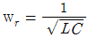
이 될 때 전체 어드미턴스(Y)의 크기와 회로 전체 전류(I)는 각각 어떻게 되는가? (단, 코일의 내부저항은 무시한다.)- Y = 최소, I = 최소
- Y = 최소, I = 최대
- Y = 최대, I = 최소
- Y = 최대, I = 최대
(정답률: 57%)
33. 4단자 회로망에서 1차 단자 입력 개방 역방향 전달 임피던스를 나타내는 Z 파라미터의 표현으로 옳은 것은?
- Z11
- Z12
- Z21
- Z22
(정답률: 65%)
34. 다음 함수에서 초기 값은 얼마인가?
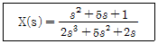
- 0
- 0.5
- 1
- 5
(정답률: 60%)
35. 그림 (B)는 그림 (A)를 노턴의 등가회로로 나타낸 것이다. Is[A]와 Vab[V]를 올바르게 나타낸 것은?
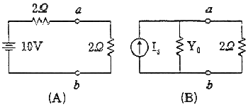
- Is = 1, Vab = 1
- Is = 2, Vab = 2
- Is = 10, Vab = 10
- Is = 5, Vab = 5
(정답률: 70%)
36. 단위 임펄스 δ(t)의 라플라스 변환은?
- 1
- S
- 1/S
- 0
(정답률: 66%)
37. R-L 직렬회로에서 R=20Ω, L=40mH인 경우 이 회로의 시정수는?
- 1ms
- 2ms
- 4ms
- 8ms
(정답률: 73%)
38. 그림과 같은 이상 변압기에서 1차 전압 V1=100V일 때, 2차 전압 V2=12V가 되도록 1차 코일 수를 n1=200회로 하였다. 2차 코일의 수 n2는?
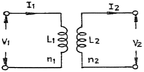
- 10회
- 12회
- 20회
- 24회
(정답률: 82%)
39. 60Hz, 100V의 교류 전압을 200Ω 전구에 인가할때 소비되는 평균 전력은 몇 W 인가?
- 5
- 15
- 50
- 60
(정답률: 61%)
40. 어떤 회로에 전압을 가하니 90° 위상이 앞선 전류가 흘렀을 경우 이 회로의 어떠한 부분 때문인가?
- 저항성 부하
- 유도성 부하
- 용량성 부하
- 무유도성 부하
(정답률: 57%)
3과목: 전자계산기일반
41. 컴퓨터의 처리방식 중 데이터 처리요구가 들어오는 즉시 처리하는 방식은?
- Time sharing 처리
- Batch 처리
- Real-time 처리
- Off-line 처리
(정답률: 82%)
42. ASCⅡ 코드의 구성으로 옳은 것은?
- 4개의 존(zone)비트, 3개의 디지트(digit)비트
- 3개의 존(zone)비트, 4개의 디지트(digit)비트
- 2개의 존(zone)비트, 5개의 디지트(digit)비트
- 5개의 존(zone)비트, 5개의 디지트(digit)비트
(정답률: 73%)
43. 컴퓨터 내부회로를 bus line으로 구성하는 가장 큰 목적은?
- 레지스터의 수를 줄이기 위하여
- speed를 향상시키기 위하여
- 정확한 전송을 위하여
- 내부의 연결수를 줄이기 위하여
(정답률: 65%)
44. 11001110과 10101000을 AND 연산하면?
- 11001110
- 10101011
- 11101111
- 10001000
(정답률: 74%)
45. 컴퓨터 설계 단계에서부터 이미 할당되어 있는 주소는?
- base address
- absolute address
- direct address
- indirect address
(정답률: 73%)
46. DMA 동작에서 CPU는 주변장치와 DMA의 상태를 조사하여 만족스러운 상태에 있으면 입･출력 통신선을 통하여 정보를 보내는데 이 정보에 해당되지 않는 것은?
- 출력을 위한 데이터가 저장된 메모리 블록의 시작번지
- 데이터가 입력될 메모리 블록의 시작번지
- 메모리 블록내의 워드의 수
- DMA 전송을 위한 프로그램의 시작번지
(정답률: 49%)
47. address line이 16개인 CPU의 직접액세스가 가능한 메모리 공간은 몇 KByte 인가?
- 16
- 32
- 48
- 64
(정답률: 64%)
48. 중앙처리장치 내부의 순간순간의 상태(PC, Condition Code, Interrupt Code 및 다른 상태)에 관한 정보를 포함하고 있는 것을 무엇이라 하는가?
- Interrupt
- Machine Check
- PSW
- SVC
(정답률: 62%)
49. 부호를 고려하지 않은 양의 수에 대한 산술적 시프트를 한 경우에 대한 설명 중 틀린 것은?
- 시프트시 새로 들어오는 비트는 0이다.
- 왼쪽으로 1번 시프트 하면 2배 한 것과 같다.
- 오른쪽으로 1번 시프트 하면 2로 나눈 것과 같다.
- 왼쪽으로 시프트시 밀려나는 비트가 1이면 절단현상이 발생한다.
(정답률: 72%)
50. 디스크 장치로 입·출력할 경우 컴퓨터 내부에서 실질적으로 발생하는 입･출력 단위는?
- 논리적 레코드
- 물리적 레코드
- 아이템
- 파일
(정답률: 71%)
51. 기억 장치가 1024word로 구성되고 word는 16bit로 이루어 질 때 PC, MAR, MBR의 각 비트 수를 순서대로 바르게 나타낸 것은?
- 16, 10, 10
- 10, 10, 16
- 10, 16, 16
- 16, 16, 10
(정답률: 68%)
52. 기억기능은 없이 특정 기능을 수행할 수 있도록 게이트를 조합한 논리 회로는?
- 순서 논리 회로
- 조합 논리 회로
- 메모리 논리 회로
- 단순 논리 회로
(정답률: 74%)
53. 스택 구조의 컴퓨터에서 메모리에 아이템을 넣는 마이크로동작은?
- PUSH
- POP
- INFIX
- PREFIX
(정답률: 76%)
54. 포인터(pointer)에 의하여 연결된 리스트를 무엇이라 하는가?
- Sequence list
- Dense list
- Linked list
- Linear list
(정답률: 83%)
55. 다음 그림과 같은 파형 AB가 AND gate를 통과했을 때의 출력 파형은?
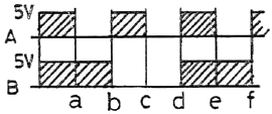
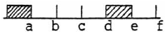
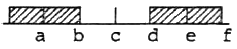
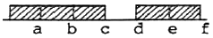
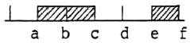
(정답률: 83%)
56. 프로그램 카운터가 명령의 주소 번지 부분과 더해져서 유효번지가 결정되는 주소 지정 방식은?
- 상대 번지 모드(Relative address mode)
- 간접 번지 모드(Indirect address mode)
- 인덱스드 어드레싱 모드(Indexed addressingmode)
- 베이스 레지스터 어드레싱 모드(Base register Addressing mode)
(정답률: 58%)
57. 자기디스크의 CAV(constant angular velocity:등각속도) 방식에 대한 설명으로 옳지 않은 것은?
- 일정한 속도로 회전하는 상태에서도 데이터를 동일한 비율로 액세스할 수 있다.
- 트랙의 저장 밀도는 모두 같다.
- 회전 구동장치가 간단하다.
- 모든 트랙에 저장되는 데이터 비트 수는 같다.
(정답률: 52%)
58. 명령어의 연산자 코드가 8비트, 오퍼랜드가 10비트 일 때, 이 명령어로 최대 몇 가지 연산을 수행할 수 있는가?
- 8
- 18
- 256
- 1024
(정답률: 69%)
59. 주소(address) 지정방식이 아닌 것은?
- 직접 어드레싱(direct addressing)
- 즉시 어드레싱(immediate addressing)
- 간접 어드레싱(indirect addressing)
- 임시 어드레싱(temporary addressing)
(정답률: 76%)
60. 컴퓨터의 연산기가 수행할 수 있는 연산 중 논리 연산이 아닌 것은?
- AND
- OR
- NOT
- MOVE
(정답률: 84%)
4과목: 전자계측
61. 다음 중 주파수의 성질 중 틀린 것은?
- 주파수는 파장과 비례한다.
- 빛의 파장에 따라 적외선, 가시광선, 자외선으로 나눌 수 있다.
- 가시광선은 눈으로 볼 수 있는 빛의 영역이다.
- 보라색 가시광선 영역보다 주파수가 높고 파장이 짧은 영역은 자외선으로 분류된다.
(정답률: 71%)
62. 다음과 같은 회로에서 출력파형 eo는?
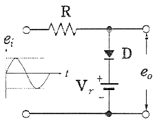
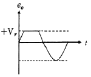
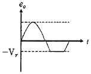
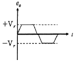
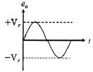
(정답률: 60%)
63. 아날로그형의 회로 시험기나 전압계 등에 이용하는 방법으로 측정량에 따라 지침이 이동되어 지시되는 측정법은?
- 영위법
- 비교측정
- 편위법
- 절대측정
(정답률: 59%)
64. 오실로스코프를 사용하여 교류 전압 파형을 나타낼 때 교류 파형의 진폭은 어떤 값으로 나타내는가?
- 실효치
- 평균치
- 피크치
- 절대치
(정답률: 69%)
65. 다음 중 가장 높은 주파수를 측정할 수 있는 것은?
- 딥 미터
- 진동편형 주파수계
- 흡수형 주파수계
- 동축형 주파수계
(정답률: 65%)
66. 오실로스코프 진폭 변조편을 측정하여 다음과 같은 파형을 얻었을 경우, 최대치 (A)는 40mm로 하고 변조도(M)은 80%로 하기 위한 최소치 B의 크기는 약 몇 mm 인가?
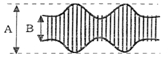
- 1.5
- 2.3
- 3.3
- 4.4
(정답률: 62%)
67. 디지털 전압계의 기본 원리를 나타낸 그림이다. ㉠에 해당하는 것은?
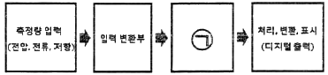
- A/D 변환기
- LCD
- FND
- 감쇄기
(정답률: 83%)
68. 트랜지스터의 정특성 측정방법으로 틀린 것은?
- 이미터 접지의 전류 증폭률은 Vc를 일정하게 유지하면서 측정한다.
- 출력 어드미턴스는 Vc를 일정하게 유지하면서 측정한다.
- PNP 또는 NPN 트랜지스터의 타입에 따라 전원의 극성이 다르다.
- 입력저항은 Vc를 일정하게 유지하면서 측정한다.
(정답률: 54%)
69. 저주파 발진기 중 파형 변형이 적고 진폭이 안정되며 주파수 가변이 용이한 것은?
- 톱니파 발진기
- 윈 브리지 발진기
- 레헤르선 발진기
- 비트(Beat) 발진기
(정답률: 60%)
70. 다음 중 소인 신호발진기의 구성부가 아닌 것은?
- 리액턴스 관
- 진폭 제한기
- 톱니파 발진기
- 주파수 변별기
(정답률: 63%)
71. 과도한 전류가 흘렀을 때 발생하는 열로 녹는점이 낮은 몸통이 끊어져 회로가 끊어지는 원리를 이용한 것은?
- 퓨즈
- 다리미
- 전기장판
- 전기밥솥
(정답률: 85%)
72. 다음 그림은 오실로스코프 위상을 측정하는 그림이다. 출력 파형이 그림과 같은 리사주 도형일 때 위상 계산식으로 옳은 것은?
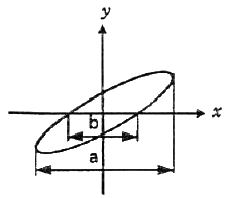
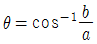
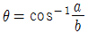
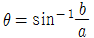
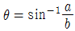
(정답률: 70%)
73. 가동 철편형 계기의 특정으로 틀린 것은?
- 대부분 직류 전용 측정 계기로 사용된다.
- 구조가 비교적 간단하고, 가격이 저렴하다.
- 감도가 높은 것은 제작하기 곤란하고, 오차가 비교적 많다.
- 외부 자계의 영향을 받기 쉽다.
(정답률: 44%)
74. 구형파 전류를 전류력계형 전류계로 측정하였더니 8A를 지시하였다. 이 전류를 가동코일형 계기로 측정하면 약 몇 A 인가? (단, 반파 정류한 것으로 가정한다.)
- 1
- 5.6
- 2
- 2.8
(정답률: 57%)
75. 90KΩ 저항의 소비전력이 9W 이하가 되려면 전류는 최대 몇 mA 이하로 제한해야 하는가?
- 0.1
- 1
- 10
- 100
(정답률: 52%)
76. 초단파대에서 사용되는 감쇠기는?
- 저항 감쇠기
- 기계적 감쇠기
- 리액턴스 감쇠기
- L형 감쇠기
(정답률: 53%)
77. 코일의 인덕턴스를 측정하는데 사용되는 브리지는?
- 윈 브리지
- 맥스웰 브리지
- 휘스톤 브리지
- 코올라우시 브리지
(정답률: 66%)
78. 다음 중 소인 발진기를 사용할 때 주파수 특성을 관측하기 위하여 병행 사용하는 계기는?
- 고주파 발진기
- 감쇠기
- 진공관 전압계
- 오실로스코프
(정답률: 81%)
79. 지시계기의 종류 중 전력계로 이용되는 것은?
- 가동코일형
- 정전형
- 가동철편형
- 전류력계형
(정답률: 73%)
80. 디지털 계측기에 관한 설명 중 틀린 것은?
- 정도가 높은 측정이 가능하다.
- 측정이 매우 쉽고, 신속히 이루어진다.
- 잡음에 덜 민감하며, 측정 정도를 낮출 수 있다.
- 측정값을 읽을 때 개인적 오차가 발생하지 않는다.
(정답률: 65%)